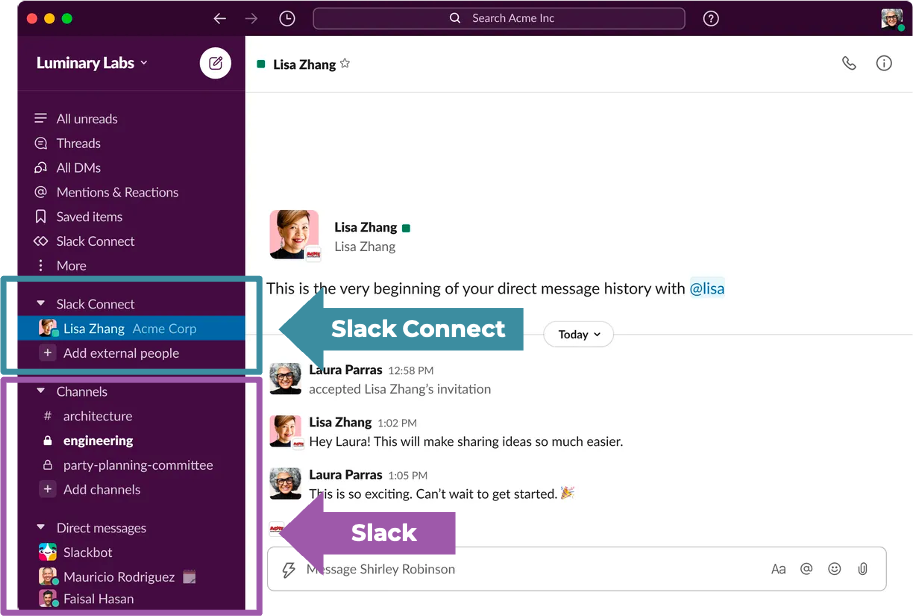

In this Berkeley students UX research project, we cooperate with the Salesforce team to complete the research goals of inderstanding how their users use Slack Connect to support their work in Salesforce. We conducted desk research, competitive analysis, interview, and asynchronous focused group to address out reserch goal. We ended up getting the conclusions that the main pain points for Slack Connects are the adoption rate, transparency issue and the message organization.
What is Slack Connect?
“Slack Connect allows you to work with people outside your company in channels and direct messages (DMs). By moving conversations out of emails, you can work securely and collaboratively with partners, vendors, or customers”
Where are the problems?
Salesforce wants to have something that allows them to make their products play nicely together” to actually achieve a 360-view that allows their customer to easily integrate their services. In this project, we want to seek for the opportunity of making Slack Connect become the glue that holds all these products together. In other word, we want to see the opportunity where we can integrate Slack Connect and other Salesforce products.
Research Questions
- JTBD : For what “jobs” are our customers currently using Slack Connect alongside SF products?
- Pain Points : Where has Slack Connect struggled to be successful?
- Opportunities : What are the Salesforce use cases that could be made better by Slack Connect?
Participants
In this study, we used three research methods to address our research questions, including desk research, interview, and focus group.
i) Desk Research
In the desk research, we want to better understand Slack Connect and its strengths and weaknesses. We did some literature review on SC and the alternate communication options including text, email, microsoft team, and google chat. We put the five products together to get some insights on why Slack Connect might be better then other products or why other products might be better than sc
In the desk research, we found that
- Compared with other 4 products, we believe the strength of Slack Connect is its interactivity.Features like emoji reaction choices, @ mention function, and threading can boost conversations and interactions.
- The weakness of Slack Connect is its adoption. Probably because of the pricing and that it is a relatively new products, which has been launched only 2 years ago, we think compared with the other four products, Slack Connect is less known by people.
- Slack connect is unique in its integration with lots of handy tools for its users. For example, Slack huddles is a tool inside Slack Connect that mimic the fast, informal discussions that took place when everyone worked from the office (it is a lightweight and audio-first way to communicate inside a Slack channel or direct message).
ii) Interview
Interview is where we dived deep into the use cases of Slack Connect & Salesforce products.
- a) Interview Objectives
-
- How do they currently use Slack Connect?
- What’s their experience with Slack Connect + other Salesforce products - b) Interview guide
-
- Semi-structured
- 5 pre-designed questions - c) 10 Participants
- d) Every interview lasts for 45 minutes
- Opportunities : foster conversation between people in different business line.
iii) Async Focus Group
- a) Focus group objectives
-
- Learn more about the pain points in our user’s JTBD
- Find opportunity areas for Slack Connect - b) Focus group guide
- - 7 pre-designed questions
- c) 7 Participants
- - 7 of out of the 10 interviewees agreed to join our focus group
- d) Async Participating
-
- 3 days
- Group text discussion on Slack Connect
- Emoji reactions
- Back and forth communication to achieve research questions